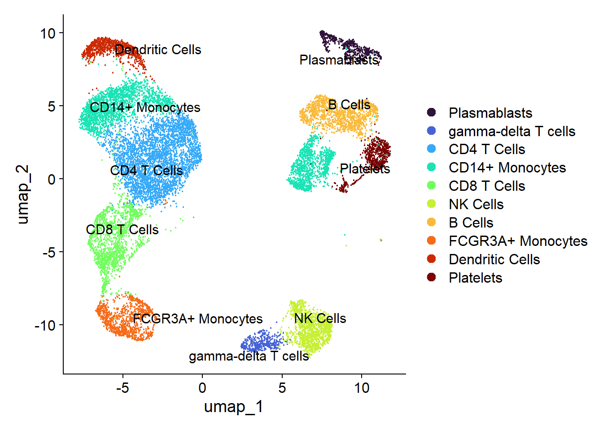

Code
library(Seurat)
library(tidyverse)
library(patchwork)
library(viridis)library(Seurat)
library(tidyverse)
library(patchwork)
library(viridis)# Helper function to load datasets and attach donor metadata
load_donor <- function(file_path, donor_id, sex, age_group) {
counts <- Read10X_h5(file_path)
obj <- CreateSeuratObject(counts = counts, project = donor_id, min.cells = 3, min.features = 200)
obj$donor_id <- donor_id
obj$sex <- sex
obj$age_group <- age_group
obj[["percent.mt"]] <- PercentageFeatureSet(obj, pattern = "^MT-")
return(obj)
}
# Load individual datasets
d1 <- load_donor("data/donor1.h5", "Donor1", "Male", "18-35")
d2 <- load_donor("data/donor2.h5", "Donor2", "Male", "18-35")
d3 <- load_donor("data/donor3.h5", "Donor3", "Female", "36-50")
d4 <- load_donor("data/donor4.h5", "Donor4", "Female", "36-50")
# Merge into a single unified Seurat object at the beginning
pbmc <- merge(d1, y = c(d2, d3, d4), add.cell.ids = c("D1", "D2", "D3", "D4"))# 1. Visualize distributions of features, counts, and mitochondrial content
vln_qc <- VlnPlot(
pbmc,
features = c("nFeature_RNA", "nCount_RNA", "percent.mt"),
group.by = "donor_id",
ncol = 3,
pt.size = 0.1
) & scale_fill_viridis_d(option = "mako")
# 2. Scatter plot to evaluate doublet/technical artifact relationships
scatter_qc <- FeatureScatter(pbmc, feature1 = "nCount_RNA", feature2 = "nFeature_RNA", group.by = "donor_id") +
theme_minimal() +
labs(title = "RNA Counts vs. Unique Genes")
# Display both plots stacked together
vln_qc / scatter_qc
Quality Control Parameter Interpretations
# Quality control filtering
pbmc_clean <- subset(pbmc, subset = nFeature_RNA > 500 & nFeature_RNA < 4500 & percent.mt < 15)# Normalization, variable feature selection, scaling, and PCA
pbmc_clean <- NormalizeData(pbmc_clean)
pbmc_clean <- FindVariableFeatures(pbmc_clean, selection.method = "vst", nfeatures = 2000)
pbmc_clean <- ScaleData(pbmc_clean)
pbmc_clean <- RunPCA(pbmc_clean, npcs = 30)
# Graph-based clustering and UMAP embedding
pbmc_clean <- FindNeighbors(pbmc_clean, dims = 1:20)
pbmc_clean <- FindClusters(pbmc_clean, resolution = 0.4)Modularity Optimizer version 1.3.0 by Ludo Waltman and Nees Jan van Eck
Number of nodes: 16339
Number of edges: 579974
Running Louvain algorithm...
Maximum modularity in 10 random starts: 0.9356
Number of communities: 15
Elapsed time: 2 secondspbmc_clean <- RunUMAP(pbmc_clean, dims = 1:20)# Complete mapping for all 15 clusters (0 through 14)
new_cluster_ids <- c(
"0" = "CD4+ T cells",
"1" = "CD14+ Monocytes",
"2" = "CD8+ T cells",
"3" = "NK cells",
"4" = "B cells",
"5" = "FCGR3A+ Monocytes",
"6" = "Dendritic cells",
"7" = "Platelets",
"8" = "CD14+ Monocyte subset",
"9" = "Plasmacytoid DCs",
"10" = "Plasma B cells",
"11" = "NK T cells",
"12" = "Naive CD8+ T cells",
"13" = "Cytotoxic T subset",
"14" = "Low-quality / Doublets"
)
pbmc_clean <- RenameIdents(pbmc_clean, new_cluster_ids)
pbmc_clean$cell_type <- Idents(pbmc_clean)DimPlot(pbmc_clean, reduction = "umap", label = TRUE, repel = TRUE, pt.size = 0.6) +
scale_color_viridis_d(option = "turbo") +
theme_minimal() +
labs(title = "UMAP Visualization of Annotated PBMC Populations", x = "UMAP 1", y = "UMAP 2")
ggplot(pbmc_clean@meta.data, aes(x = orig.ident, fill = cell_type)) +
geom_bar(position = "fill", width = 0.65) +
scale_fill_viridis_d(option = "turbo") +
theme_minimal() +
labs(y = "Proportion", x = "Donor ID", fill = "Cell Population", title = "Immune Cell Type Composition Across Donors") +
theme(axis.text.x = element_text(angle = 0, hjust = 0.5, face = "bold"),
legend.position = "right")
canonical_markers <- c("CD3D", "CD4", "CD8A", "TRDC", "NCAM1", "CD14", "FCGR3A", "MS4A1", "MZB1", "LYZ")
DotPlot(pbmc_clean, features = canonical_markers) +
RotatedAxis() +
scale_color_viridis_c(option = "magma") +
labs(title = "Canonical Lineage Marker Expression", x = "Marker Gene", y = "Annotated Cell Type") +
theme_minimal() +
theme(axis.text.x = element_text(angle = 45, hjust = 1, face = "bold"))
# 1. Aggregate raw counts to donor-celltype pseudobulk level
pbmc_clean$donor_celltype <- paste(pbmc_clean$donor_id, pbmc_clean$cell_type, sep = "___")
pb_counts <- AggregateExpression(pbmc_clean, group.by = "donor_celltype", slot = "counts")$RNA
# 2. Exclude canonical sex-chromosome genes
sex_genes <- c("XIST", "TSIX", "RPS4Y1", "DDX3Y", "KDM5D", "UTY", "EIF1AY", "USP9Y")
# 3. Analyze major immune populations safely
target_cells <- c("CD14+ Monocytes", "CD4+ T cells", "CD8+ T cells", "B cells")
df_list <- list()
for (ct in target_cells) {
# Sanitize name to match Seurat's column formatting
ct_sanitized <- gsub("[ +]", ".", ct)
cols <- colnames(pb_counts)[grepl(ct_sanitized, colnames(pb_counts))]
if (length(cols) >= 2) {
sub_mat <- pb_counts[, cols, drop = FALSE]
males <- cols[grepl("Donor1|Donor2", cols)]
females <- cols[grepl("Donor3|Donor4", cols)]
if (length(males) > 0 && length(females) > 0) {
log2fc_all <- log2(rowMeans(sub_mat[, males, drop = FALSE] + 1) / rowMeans(sub_mat[, females, drop = FALSE] + 1))
autosomal_genes <- setdiff(names(log2fc_all), sex_genes)
log2fc_auto <- log2fc_all[autosomal_genes]
top_genes <- head(sort(abs(log2fc_auto), decreasing = TRUE), 5)
df_list[[ct]] <- data.frame(
CellType = ct,
Gene = names(top_genes),
Log2FC = log2fc_auto[names(top_genes)],
stringsAsFactors = FALSE
)
}
}
}
results_df <- do.call(rbind, df_list)
# 4. Render visual comparison chart
ggplot(results_df, aes(x = reorder(Gene, Log2FC), y = Log2FC, fill = Log2FC > 0)) +
geom_col() +
coord_flip() +
facet_wrap(~CellType, scales = "free_y") +
scale_fill_manual(
values = c("TRUE" = "#2b5c8f", "FALSE" = "#d95f02"),
labels = c("Higher in Females/Older", "Higher in Males/Younger")
) +
theme_minimal() +
labs(
title = "Top Autosomal Gene Expression Shifts (Pseudobulk)",
x = "Gene",
y = "Log2 Fold Change (Male/Young vs Female/Old)",
fill = "Direction"
)